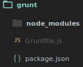
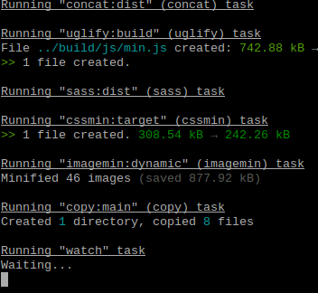

Get Started
Thank you for purchasing our theme 😊
This documentation will give you an understanding of how the files are structured and guide you in performing common functions.
If you have any questions that are beyond the scope of this help file, please feel free contact us via e-mail: support@liliom.co. Enjoy!
File Structure
The template contains 20 html files. You will find them in the root directory of the download package.
Sham/
├── assets/
│ └── css/
│ ├── jquery.fancybox.css
│ ├── Liliom-icons.css
│ ├── owl.carousel.css
│ ├── pace.css
│ ├── swiper.css
│ └── fonts/
│ └── Liliom/
│ ├── glyphicons-halflings-regular.ttf
│ └── img/
│ ├── ....
│ └── js/
│ └── libs/
│ ├── scripts.js
│ └── sass/
│ └── bootstrap/
│ ├── _mixins.scss
│ ├── _variables.scss
│ ├── style.scss
├── grunt/
| ├── Gruntfile.js
| ├── package.json
├── build/
│ ├── ....
-
assets/css
This folder contains all CSS packages, which used by the template. All files here should not be changed.
-
jquery.fancybox.css
The CSS file for the jQuery Fancy Box plugin
-
Liliom-icons.css
The CSS file for every icon in the theme. Read More
-
owl.carousel.css
The CSS file for the OWL Carousel plugin Read More
-
pace.css
The CSS file for the loader bar pace plugin.
-
swiper.css
The CSS file for the slider plugin Swiper plugin.
-
assets/fonts
All fonts which used in the template are located here.
-
assets/js
Sham. comes with a number of JS files, many of which you will never edit. If you don't know your way around javascript please don't edit them, these files will break parts of your site.
-
scripts.js
This is the main scripts file for the template, that includes all functions specific to the theme such as control of the slider and initialize map and Carousel among other things.
-
assets/sass
We use Sass language as a preprocessor for CSS, this means if you want to edit CSS and customize your theme, you should edit these files, and not the files in assets/css.
Sass comes with a lot of great features, it offers variables, mixins and others to make editing and customizing the template so much easier.
Note: All files which started with underscore like _variables.scss are includable.
-
bootstrap/
This folder contains bootstrap sass, it is a version of bootstrap which written in sass, it makes the process of editing and customizing bootstrap so much easier.
Example:
we can edit bootstrap itself through overriding its variables, you can go to bootstrap variables file bootstrap/bootstrap/_variables.scss, pick a variable, copy it, paste it in our variables file _variables.scss, and change it to the value of your choice.
// bootstrap/bootstrap/_variables.scss
// line 373
// I picked this variable here
$navbar-default-bg: #f8f8f8 !default;
// _variables.scss
// line 31
// and changed it to my own value here.
$navbar-default-bg: #fff;
-
_mixins.scss
A Mixin is a group of CSS declarations that you want to reuse throughout your site. All theme Mixins are included in this file.
-
_variables.scss
This file has all theme variables, from it you can edit the your theme colors and fonts.
-
style.scss
The main style file, it has all CSS for every single detail in the theme.
-
assets/grunt
This folder contains everything relevant to grunt, and task automation.
-
Gruntfile.js
The Grunt Main file, you will find full explanation here.
-
package.json
This file is the NPM packages file, it contains all packages names, and versions, you can install the packages by executing npm install on this directory.
for further details, see Grunt Section
-
assets/build
The build directory for grunt, when grunt starts, it takes all files in assets, apply its edits, and put the files here.
Grunt
The Grunt main website, defines Grunt as "In one word: automation. The less work you have to do when performing repetitive tasks like minification, compilation, unit testing, linting, etc, the easier your job becomes. After you've configured it through a Gruntfile, a task runner can do most of that mundane work for you—and your team—with basically zero effort."
So Grunt is basically a task runner, that do repetitive tasks, and we are using it in the theme to concat and minfiy JavaScript, compile sass and minfiy css, and compress images.
All stuff which relevant to grunt is exists in the grunt directory.

The first thing you need to do is opening your CMD or Terminal here, and execute npm install if not works, you need to install npm, and grunt, so search in google for "How to install NPM and Grunt" and add the name of your OS to the search query.
After installing npm and grunt, execute npm install in the grunt directory. and when that get finished, you will notice a new directory grunt/node_modules this directory contains all modules, which will be used by Grunt.
Now you will need to do one thing, basically open CMD or Terminal on the grunt folder, and execute grunt and now grunt will minify the CSS and JS, and do all the repeatative stuff for us, now you can open index.html and you will notice that it is working.

Notes:
- When you need to change anything in sass or js code, you will need to run this command
grunt so grunt will start compiling sass, and minifying it, etc...
Grid System
The template is based on Bootstrap v3.3.6, 12 column grid system. Is flexible and easy to understand. For more info go here.
Basic Introduction
Grid systems are used for creating page layouts through a series of rows and columns that house your content. Here's how the Bootstrap grid system works:
Rows must be placed within a .container (fixed-width) or .container-fluid (full-width) for proper alignment and padding.
Use rows to create horizontal groups of columns.
Content should be placed within columns, and only columns may be immediate children of rows.
Predefined grid classes like .row and .col-xs-4 are available for quickly making grid layouts. Less mixins can also be used for more semantic layouts.
Columns create gutters (gaps between column content) via padding. That padding is offset in rows for the first and last column via negative margin on .rows.
The negative margin is why the examples below are outdented. It's so that content within grid columns is lined up with non-grid content.
Grid columns are created by specifying the number of twelve available columns you wish to span. For example, three equal columns would use three .col-xs-4.
If more than 12 columns are placed within a single row, each group of extra columns will, as one unit, wrap onto a new line.
Grid classes apply to devices with screen widths greater than or equal to the breakpoint sizes, and override grid classes targeted at smaller devices. Therefore, applying any .col-md- class to an element will not only affect its styling on medium devices but also on large devices if a .col-lg- class is not present.
Map
Sham uses Google maps plugin. If you want to add a map to any page you have to first call the Google maps API after the footer and before the ending body tag like this:
<script src="https://maps.googleapis.com/maps/api/js?v=3.exp"></script>
Then add a div with the id #map, with attributes data-lat="" for latitude and data-long="" for longitude and data-title="" for title and data-subtitle="" for subtitle. Like this:
<div id="map" data-lat="40.9803480" data-long="28.7270580" data-title="Liliom Lab" data-subtitle="Istanbul, Turkey"></div>
Icons
Sham uses Liliom Icons font. This font combines Material icons and Font Awesome icons together.
Using (Liliom Icons) package is very easy and simple, Let's take an example:
<i class="lil-ICON_NAME"></i> Example: <i class="lil-search"></i>
You can get icons codes from here.
Slider Default
Sham uses Bootstrap Carousel as second slider. You can view all available options for the carousel at their website
The basic structure implemented in Sham Template is as follows:
<div class="slider">
<div id="YOUR_SILDER_ID" class="carousel slide" data-ride="carousel">
<!-- Indicators -->
<ol class="carousel-indicators">
<li data-target="#YOUR_SILDER_ID" data-slide-to="0" class="active"></li>
<li data-target="#YOUR_SILDER_ID" data-slide-to="1"></li>
<li data-target="#YOUR_SILDER_ID" data-slide-to="2"></li>
</ol>
<!-- Wrapper for slides -->
<div class="carousel-inner" role="listbox">
<!-- SLIDE WITH TEXT -->
<div class="item active" style="background-image: url('build/img/image.jpg');">
<div class="carousel-caption align-vertical">
<div class="row">
<div class="col-sm-12 mask-left">
<h1>YOUR TITLE HERE.</h1>
<p>YOUR PARAGRAPH HERE</p>
<div class="button-group">
<a href="BUTTON URL 1" class="btn btn-primary">BUTTON TEXT 1</a>
<a href="BUTTON URL 2" class="btn btn-default">BUTTON TEXT 2</a>
</div>
</div>
</div>
</div><!-- /.carousel-caption -->
</div><!-- /.item -->
<!-- SLIDE WITHOUT TEXT -->
<div class="item" style="background-image: url('build/img/image.jpg');"></div><!-- /.item -->
<!-- MORE AND MORE SLIDERS.... -->
</div>
</div>
</div>
Slider swiper
Sham uses Swiper Plugin as its primary slider manager. You can view all available options for the slider at their website
The basic structure implemented in Sham Template is as follows:
<div class="swiper-slider">
<!-- Slider main container -->
<div class="swiper-container fullscreen">
<!-- Additional required wrapper -->
<div class="swiper-wrapper text-center">
<!-- Slides -->
<div class="swiper-slide" style="background-image: url(build/img/img.jpg);">
<div class="valign-wrapper fullscreen">
<div class="valign col-xs-offset-3" data-swiper-parallax="-100">
</div>
</div>
</div>
<div class="swiper-slide" style="background-image: url(build/img/img.jpg);">
<div class="valign-wrapper fullscreen">
<div class="valign col-xs-offset-8" data-swiper-parallax="-100">
</div>
</div>
</div>
<div class="swiper-slide" style="background-image: url(build/img/img.jpg);">
<div class="valign-wrapper fullscreen">
<div class="valign col-xs-offset-5">
</div>
</div>
</div>
</div>
<!-- If we need pagination -->
<div class="swiper-pagination"></div>
<!-- If we need navigation buttons -->
<div class="swiper-button-prev"><i class="lil-chevron_left"></i></div>
<div class="swiper-button-next"><i class="lil-chevron_right"></i></div>
</div>
</div><!-- /.swiper-slider -->
Flying to cart
If you need to add the product to your application by Ajax just follow these simple steps.
- Open
scripts.js file - Located in assets/js folder.
- You will find
addToCart function in 347 line.
- Inside this function you will find comment
1- [Add product to 'Application' by AJAX]
- Add your AJAX code here :)
For get product ID, add the product-id="ID" attribute in div tag have an class product. For Example:
<div class="product" product-id="ITEM_ID">
....
</div>
Now you can use productId variable in addToCart function. (this variable will get product-id from attribute).
productId variable defined in assets/js/scripts.js:349
Slide Toggle
Slide Toggle effect is very easy and flexible with sham theme, Let's go to understand how it works.
If are you need to see an example, go to checkout.html file and click on "Click here to login" link, or try to change (Payment Method).
How it works:
- Create an element and add
data-slide-toggle="#YOUR_SELECTOR" attribute.
- Create
div tag that have a selector <div id="YOUR_SELECTOR"></div>
For Example:
<a href="#" data-slide-toggle=".login-form">Click here to login</a>
<div class="login-form">
<!-- YOUR CONTENT HERE -->
</div>
Helpers Classes
Sham comes with a number of helpers classes for help you.
| Class |
Description |
mask-left |
Add nice mask as background. |
browser-default |
You can add this class to get the browser default checkbox or radio. |
typed-cursor |
typing animation cursor |
align-vertical |
You can easily vertically center things by adding this class to the container holding the items you want to vertically align. |
fullscreen |
To set window height. |
pos-r |
position relative |
col-center |
To remove float and auto margin. |
content-top-margin |
Add 130px margin top. |
no-margin-top |
Remove margin top. |
no-padding-right |
Remove padding right. |
no-padding-left |
Remove padding left. |
no-padding-top |
Remove padding top. |
no-padding-bottom |
Remove padding bottom. |
Plugin - slimScroll
Small jQuery plugin that transforms any div into a scrollable area with a nice scrollbar. Demo and more: Click Here.
For use slimScroll with Sham theme option, just add slim-scroll attribute for user div, For Example:
<div slim-scroll>
<!-- YOUR CONTENT -->
</div>
Plugin - owlCarousel
Touch enabled jQuery plugin that lets you create a beautiful, responsive carousel slide. Demo and more: Click Here.
Sham theme comes with a number of ready carousel, Like (Brands and Related Products).
Brands carousel structure:
Add div with id="logos" attribute, example:
<section class="section brands" id="brands">
<div class="container">
<div class="row">
<div id="logos">
<div class="item">
<a href="#!"><img src="build/img/brands/1.png" class="img-responsive"></a>
</div>
<div class="item">
<a href="#!"><img src="build/img/brands/2.png" class="img-responsive"></a>
</div>
<!-- MORE AND MORE BRANDS -->
</div>
</div>
</div>
</section><!-- /#brands -->
Related Products carousel structure:
Add div with id="related-products" attribute, example:
<div id="related-products">
<div class="product" product-id="1">
<div class="inner-product">
<span class="onsale">Sale!</span>
<div class="product-thumbnail">
<img src="build/img/18.jpg" class="img-responsive">
</div>
<div class="product-details text-center">
<div class="align-vertical">
<h3 class="product-title">PRODUCT TITLE</h3>
<p>SOME TEXT HERE</p>
<p class="product-price">
<ins>
<span class="amount">$450</span>
</ins>
<del>
<span class="amount">$750</span>
</del>
</p>
<div class="product-btns">
<span data-toggle="tooltip" data-placement="top" title="Add To Cart">
<a href="#!" class="li-icon add-to-cart"><i class="lil-shopping_cart"></i></a>
</span>
<span data-toggle="tooltip" data-placement="top" title="View">
<a href="#!" class="li-icon view-details"><i class="lil-search"></i></a>
</span>
</div>
</div>
</div>
</div>
</div><!-- /.product -->
<!-- MORE AND MORE AMAZING PRODUCTS -->
</div>
Plugin - fancyBox
fancyBox is a tool that offers a nice and elegant way to add zooming functionality for images, html content and multi-media on your webpages. Demo and more: Click Here.
For use fancyBox: Create link elements whose href attributes will contain the path of the element you wish to open within the fancyBox, then add class="fancybox". Like this:
<a href="build/img/img.png" class="fancybox">
<img src="build/img/img.png">
</a>
If you have a set of related items that you would like to group, additionally include a group name in the rel (or data-fancybox-group) attribute:
<a href="build/img/img.png" class="fancybox" rel="gallery">
<img src="build/img/img.png">
</a>
<a href="build/img/img.png" class="fancybox" rel="gallery">
<img src="build/img/img.png">
</a>